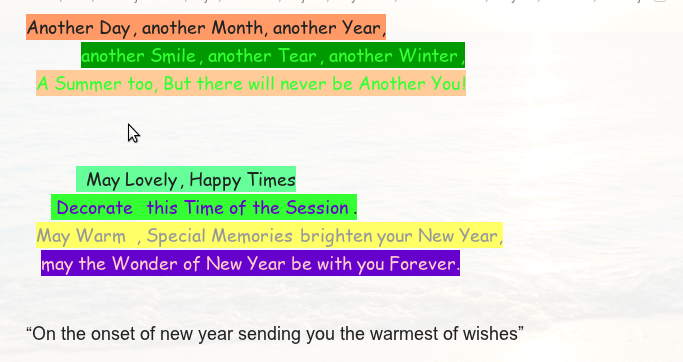

Some people wonder if an email sent as HTML is really as good as it looks with funky fonts, variying text heights and colors, blinking words and what not. But just think, is email really meant to beautify? Is email a convenient and lightning fast communication tool or an exhibition of sender's art and creativity?
I guess you already know the answers. HTML email may look very good on the sender's computer, but it may look sometimes disastrous on recipeint's. Differences in your and recipient's system can change almost everything in your email from font to text size. Wonder what would you do if your email looked somewhat like this:
instead of this:

This may happen if the recipients email client does not accept HTML messages at all. At this point the main utility to communicate with the recipient fails big time. You dont want to send this to anyone.
It is also always better to veiw your email in plain text veiw as it may contain some malicious content. It may contain a virus hidden inside the HTML code or it may have some web programs that runs as soon as you open it and may perform harmful actions like gathering nformation about you or your system.
Also you may think why does most popular email clients even support HTML email at all? Ah! Thats advertising at it's peak. The best way to track you and your activities by encouraging you to use HTML email. It allows companies to advertise via the free applications.
So a really short conclusion is: `use plain text email`.